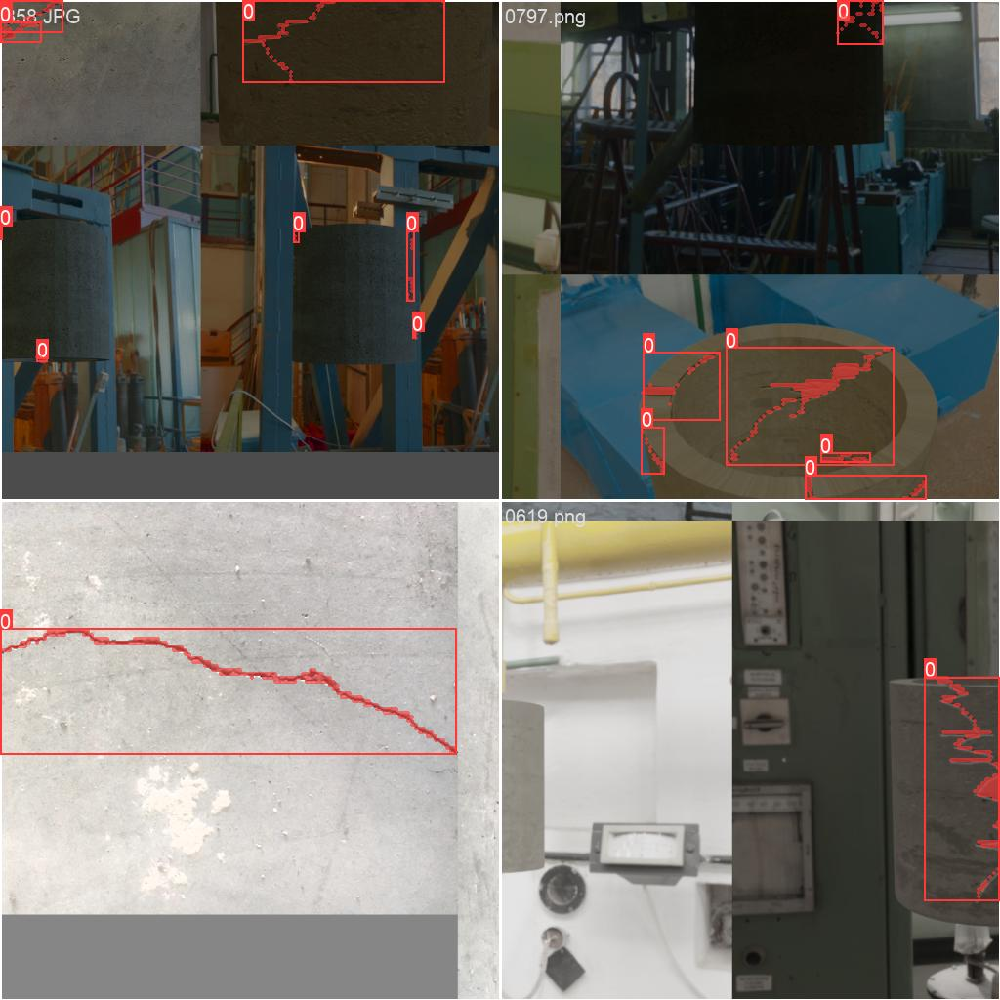
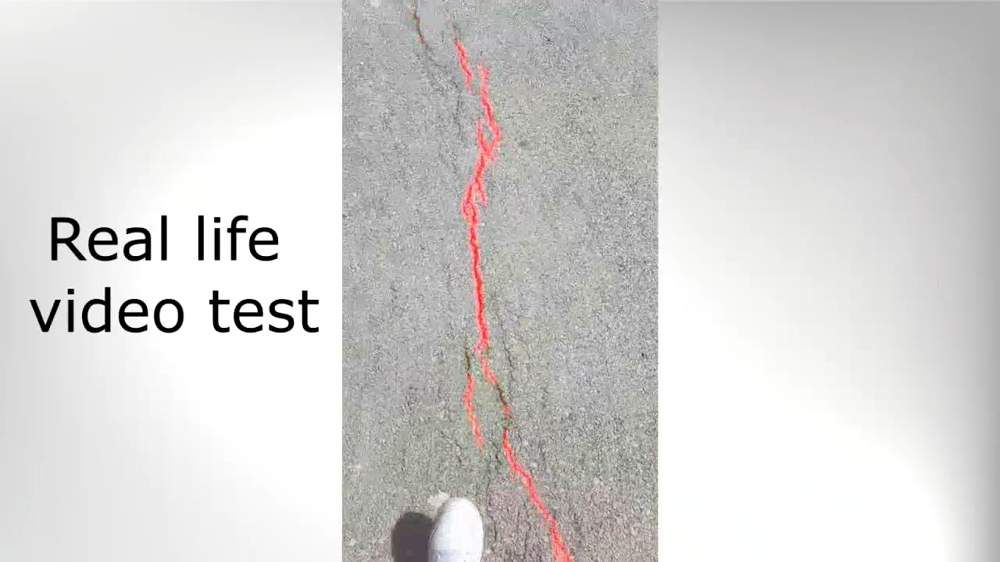

Synthetic data · Segmentation
Synthetic Crack Dataset
A procedural Blender pipeline that generates a fully labeled crack-segmentation dataset — and transfers from synthetic pipes to real concrete.

Overview
An advanced synthetic pipe-crack generator built in Blender. It produces realistic images of pipe sections with procedurally generated cracks, randomizing camera parameters, illumination and materials on every iteration to build a diverse dataset that covers the long tail of real-world conditions.
Because the cracks are generated programmatically, every image ships with a pixel-perfect segmentation mask — no manual annotation needed. The dataset trained a YOLOv8-medium segmentation model that generalizes from synthetic pipes to real imagery, performing strongly even on out-of-distribution surfaces such as ground cracks.
Demo
Synthetic data generation and live crack detection
Highlights
- Procedural cracks with randomized camera, lighting and materials
- Automatic pixel-perfect segmentation labels — zero manual annotation
- 2000 synthetic + 900 real images · trained on YOLOv8-medium
- Generalizes to real ground cracks beyond the synthetic domain
Gallery

